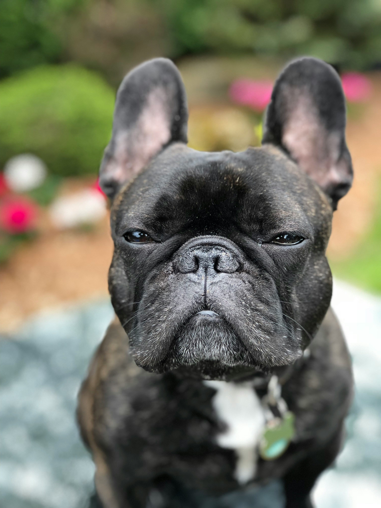

The French Bulldog (French: Bouledogue Français) is a small French breed of companion dog known for its bat-like ears, compact body, and friendly personality. The breed originated in Paris in the 19th century from crosses between Toy Bulldogs brought from England and local French dogs. French Bulldogs are popular pets around the world, especially in countries like the United States, the United Kingdom, and Australia. They are affectionate, playful, and well-suited for apartment living, but due to their flat faces they are prone to breathing and other health problems.
